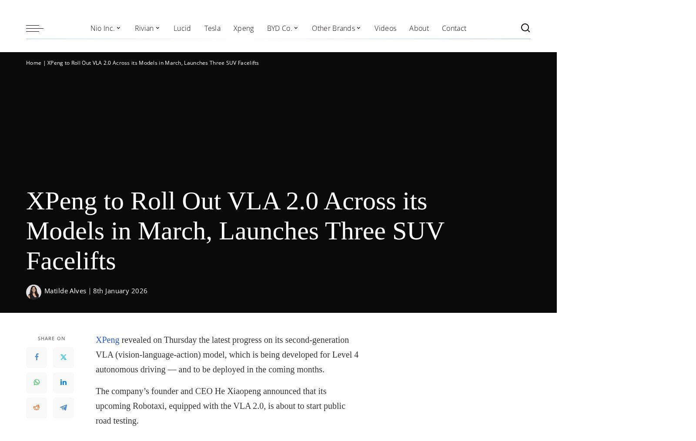

小鵬汽車（XPeng）は木曜日、レベル4自動運転向けに開発中の第二世代VLA（ビジョン・ランゲージ・アクション）モデルの最新進捗を発表した。このモデルは今後数ヶ月以内に展開される予定だ。
同社の創業者兼CEOの何小鵬（He Xiaopeng）氏は、VLA 2.0を搭載した同社のRobotaxiがまもなく公道テストを開始すると発表した。
P7+を含む複数の増程式モデル（EREV）を発表したグローバルローンチイベントで、CEOは2026年が中国と米国の両国において真の完全自動運転の始まりとなる年だと述べた。
11月、同社は今年中に5〜7人乗りのRobotaxiを3台発売する計画を発表していた。当時、それらの車両はサードパーティのエージェントによる試験運行中だった。
その頃、XPengは「一つは完全共有型のドライバーレスカー（Robotaxi）、もう一つはプライベート・エンジョイメントモデル、すなわち人間が運転するL4レベルの体験カーだ」という2つのコンセプトを開発していると声明で述べていた。
地元メディアは数日前に、XPengが来年のL4自律走行車の展開に向けた取り組みの一環として社内スタッフの配置転換を開始したと報じていた。
同社によると、VLA 2.0は3月以降、XPeng車両へ順次統合される予定だ。最初にこの技術を搭載するモデルは、新型P7のUltraバージョン、完全電動G7、およびX9 EREVとなる。
木曜日に発表されたモデル——増程式G7 SUV、第三世代の完全電動G6・G9、新型P7+——はその後、それぞれのUltraバージョンも含めてシステムを搭載する予定だ。
XPengは木曜日に3つの新型SUVを発表した：G7の増程式バージョン（7月にデビューした完全電動バージョンに続く形）と、3月に更新されたG6・G9の第三世代モデルだ。
これらのモデルは800V高電圧プラットフォーム上に構築され、急速充電対応の5Cバッテリーをサポートし、自社開発のTuring AIチップを標準装備している。
両SUVには新しいエクステリアおよびインテリアのカラーオプションが追加され、前モデルの価格は据え置かれている：G6は17万6,800元（約2万5,300ドル）から、G9は24万8,800元（約3万5,600ドル）からとなっている。
G6、G9、G7 SUVのいずれもUltraバージョンへのアップグレードが可能で、2〜3個のチップと第二世代VLAモデルが追加料金1万2,000〜2万元（約1,700〜2,800ドル）で提供される。
新型G7スーパー増程式SUVは合計航続距離1,704km（1,058マイル）を実現しており、そのうち430km（260マイル）は純電動での走行が可能だ。標準グレードはTuring AIチップ1つを搭載し、価格は19万5,800元（約2万7,980ドル）からとなっている。
新たに発表されたP7+は——36市場で同時デビューを果たし——バッテリー電動（BEV）と増程式（EREV）の両バージョンを含み、18万6,800〜19万8,800元（約2万6,700〜2万8,400ドル）からの価格で提供される。
EREVは合計航続距離1,550km（963マイル）を実現し、そのうち430kmは電動走行が可能だ。一方、BEVは最上位グレードで合計725km（450マイル）の航続距離を達成している。